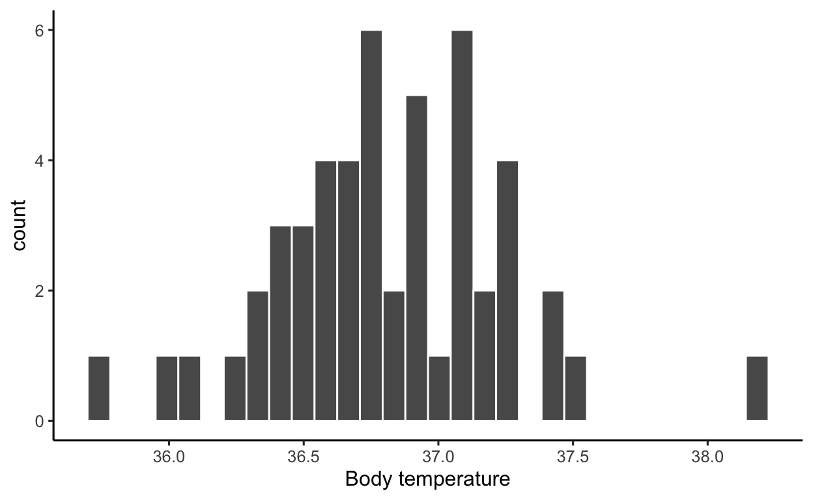
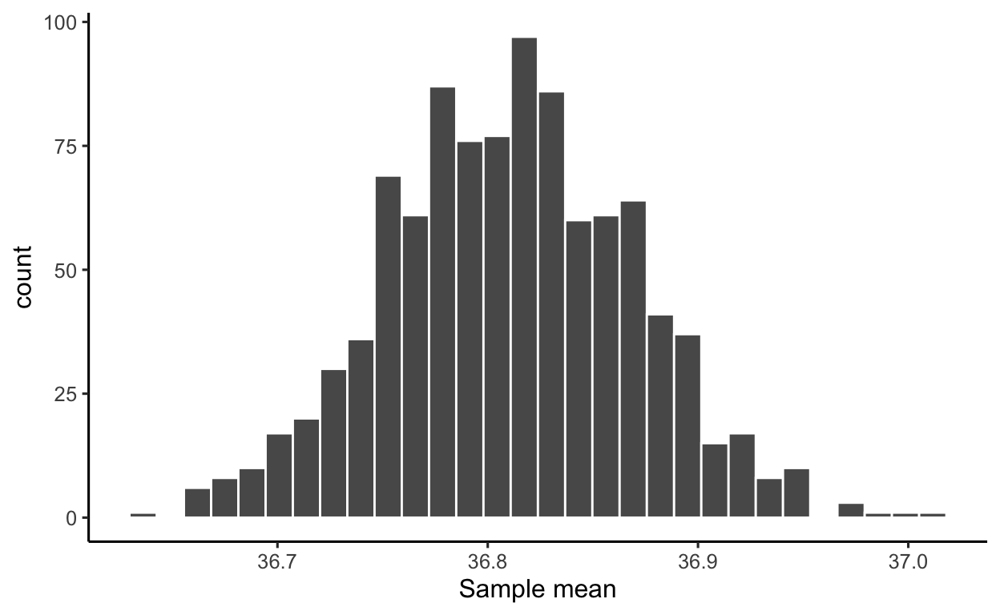
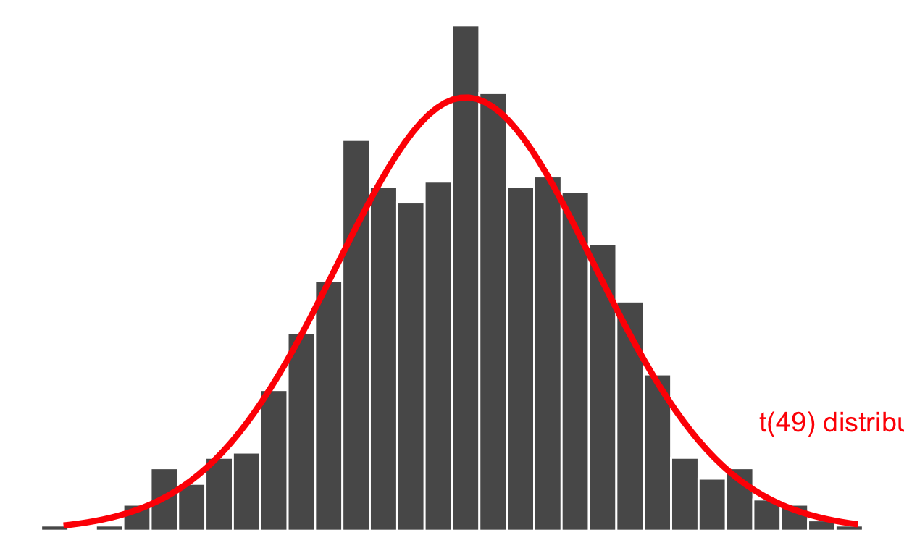
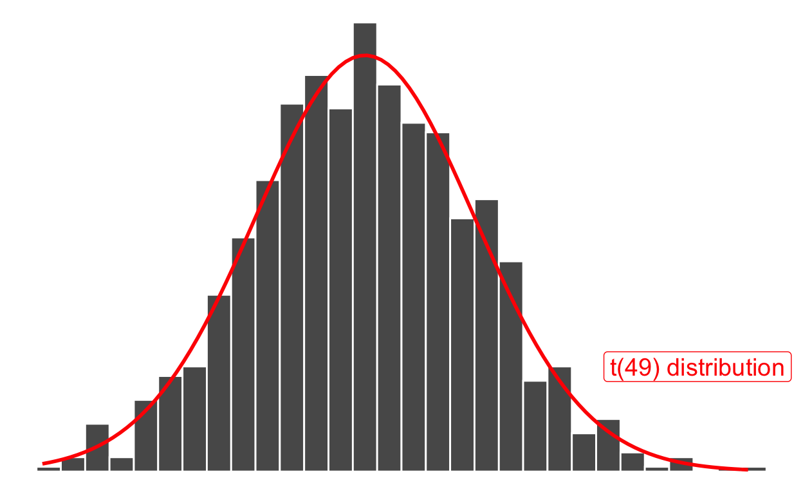
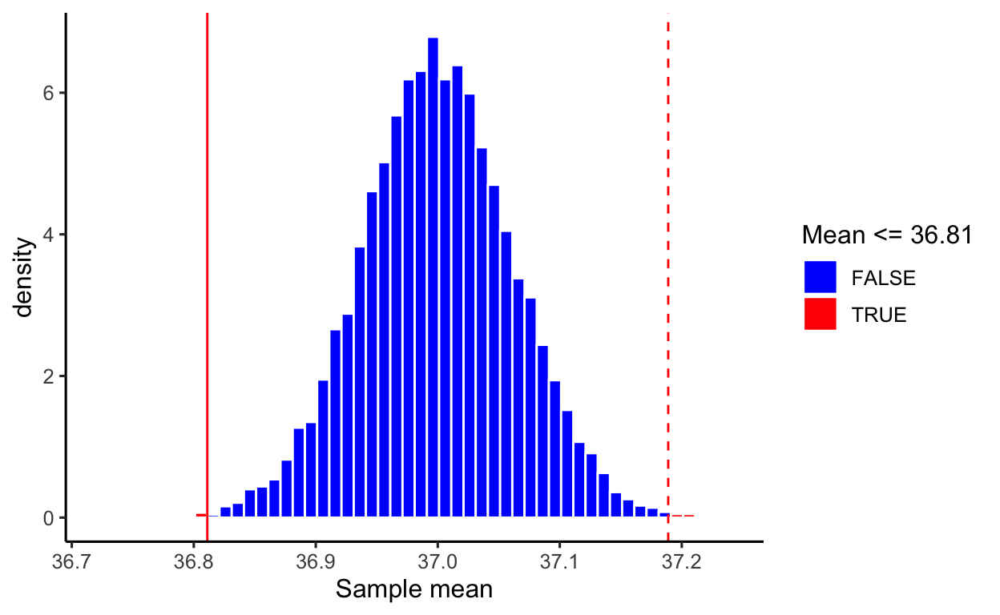
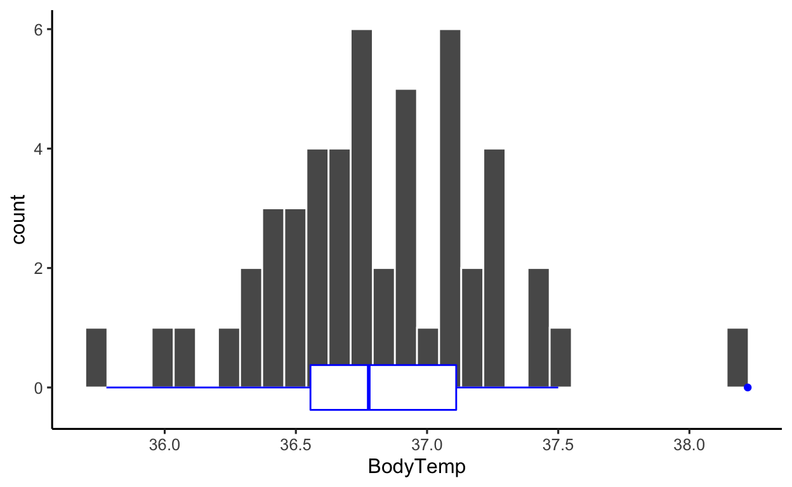

Investigation: Body temperature
Research question
Has the average body temperature for healthy humans changed from the long-thought 37 °C?
You might think that the average body temperature for healthy humans is about 37 °C. This is what most people would say and it kind of has been given for granted for many years.
However, could it be possible that the average body temperature for healthy humans has changed over time? Perhaps this could be due to the climate change?
We will use data1 comprising measurements on body temperature and pulse rate for a random sample of \(n = 50\) healthy subjects. The data are available here and also at the following address: https://uoepsy.github.io/data/BodyTemp.csv
Hypotheses
The first step is to translate the research question into hypothesis. This can be tricky sometimes and it involves understanding the research question.
The mean for an entire population is commonly denoted with the Greek symbol \(\mu\) (pronounced mu). In loose terms we want to test whether the mean body temperature for all healthy humans is 37 °C or if it has changed in either direction (i.e. it is higher or lower).
In formal notation, we will investigate the following null and alternative hypotheses:
\[ H_0 : \mu = 37 °C \\ H_1 : \mu \neq 37 °C \]
The null hypothesis (\(H_0\)) represents the status quo, i.e. what is the currently accepted standard. The alternative hypothesis (\(H_1\)) typically encodes our research question.
Data
First, we need to read the data into R.
# A tibble: 6 x 2
BodyTemp Pulse
<dbl> <dbl>
1 36.4 69
2 37.4 77
3 37.2 75
4 37.1 84
5 36.7 71
6 37.2 76dim(btdata)
[1] 50 2From the output above we see that we have measuremenets on 2 variables (BodyTemp and Pulse) on 50 participants.
Let’s visualise the variable of interest, BodyTemp:
ggplot(btdata, aes(x = BodyTemp)) +
geom_histogram(color = 'white') +
labs(x = 'Body temperature')

Next, we numerically describe the variable of interest, BodyTemp:
btstats <- btdata %>%
summarise(
Min = min(BodyTemp),
Med = median(BodyTemp),
M = mean(BodyTemp),
SD = sd(BodyTemp),
Max = max(BodyTemp)
)
btstats
# A tibble: 1 x 5
Min Med M SD Max
<dbl> <dbl> <dbl> <dbl> <dbl>
1 35.8 36.8 36.8 0.425 38.2The numbers above are numerical descriptions of the body temperatures in the collected sample of 50 healthy subjects. Any number which summarises data in a sample is called a statistic (short for sample characteristic). The two most famous statistics are probably the sample mean (or average) \(M = 36.81\) and the standard deviation \(SD = 0.43\).
On a completely different level lies the concept of parameter, which is any number describing the whole population. Often, we do not have data for the entire population, and hence the parameter is unknown.
When we want to investigate a research question, we typically obtain a sample from the entire population, then collect data from the participants in the sample, and use the sample statistic as our best estimate of the unknown population parameter.
The process of drawing conclusions about the entire population using only a subset of the data (the sample) is called (statistical) inference.
Statistics vary from sample to sample
Recall the original sample statistics which we previously computed:
btstats
# A tibble: 1 x 5
Min Med M SD Max
<dbl> <dbl> <dbl> <dbl> <dbl>
1 35.8 36.8 36.8 0.425 38.2If we were to take another sample, the sample mean would be different. Let’s try resampling (with replacement) 50 people:
btdata %>%
sample_n(50, replace = TRUE)
# A tibble: 50 x 2
BodyTemp Pulse
<dbl> <dbl>
1 37.4 77
2 37.1 64
3 36.9 70
4 36.9 82
5 36.9 83
6 36.5 77
7 36.8 73
8 37.2 81
9 36.4 74
10 37.2 75
# … with 40 more rowsNext, compute the mean:
btdata %>%
sample_n(50, replace = TRUE) %>%
summarise(M = mean(BodyTemp))
# A tibble: 1 x 1
M
<dbl>
1 36.9Let’s do this many times, 1000 say — leading to 1000 sample means, one for each sample of 50 participants:
many_means <- rerun(1000,
btdata %>%
sample_n(50, replace = TRUE) %>%
summarise(M = mean(BodyTemp)))
head(many_means)
[[1]]
# A tibble: 1 x 1
M
<dbl>
1 36.8
[[2]]
# A tibble: 1 x 1
M
<dbl>
1 36.9
[[3]]
# A tibble: 1 x 1
M
<dbl>
1 36.8
[[4]]
# A tibble: 1 x 1
M
<dbl>
1 36.7
[[5]]
# A tibble: 1 x 1
M
<dbl>
1 36.8
[[6]]
# A tibble: 1 x 1
M
<dbl>
1 36.8We will now combine into a single tibble the 1000 means, each one computed from a different sample of 50 people:
many_means <- bind_rows(many_means)
head(many_means)
# A tibble: 6 x 1
M
<dbl>
1 36.8
2 36.9
3 36.8
4 36.7
5 36.8
6 36.8dim(many_means)
[1] 1000 1We now plot the distribution of the sample means. The distribution shows the possible values of the sample mean on the x axis, and how often each value appears on the y axis:
ggplot(many_means, aes(x = M)) +
geom_histogram(color = 'white') +
labs(x = 'Sample mean')

The distribution of a statistic computed on many resamples is called the sampling distribution of the statistic: it shows the values the statistic can take and how often they appear across many samples.
As you can see, most of the sample means you would obtain from samples of size 50 people would be within 36.7 and 36.9 °C. Only a couple of sample means appear to be around 37 °C.
Many years ago, the statistician William Sealy Gosset — while working as the chief experimental brewer for the Guinness Brewery in Dublin — found a mathematical curve that fits the distribution of the sample mean shown in the histogram above. This is called a t distribution and depends on a number called the degrees of freedom (df) which is simply the sample size minus one: \(n - 1\).
The t distribution with \(n-1\) df is written \(t(n - 1)\) and in this case as the sample has size \(n = 50\), it is \(t(49)\):

As you can see above, the distribution of the sample mean follows a t distribution (the red curve above). You don’t need to learn the mathematical formula of the red curve, as R can compute it for you (more on this later).
The width of the distribution is the standard deviation of the sample mean. It has a special name however: standard error of the sample mean, as it tells us how variable the sample means are from sample to sample.
In other words, it tells us how reliable those means are as estimates of the unknown population mean. The smaller the variation (the narrows the distribution), the better.
\[ SE(\text{sample mean}) = \frac{SD(\text{original sample})}{\sqrt{\text{sample size}}} \]
In this case, the original sample is the collected data btdata. The SE of the mean is computed as follows:
SD <- sd(btdata$BodyTemp) # same as btstats$SD
SD
[1] 0.4251776n <- nrow(btdata)
n
[1] 50SE <- SD / sqrt(n)
SE
[1] 0.0601292\[ SE(\text{mean}) = \frac{0.4251776}{\sqrt{50}} = 0.0601292 \]
You can confirm that it is approximately equal to the standard deviation of the 1000 generated sample means. The two numbers for the SE will become closer and closer as the number of resamples increases (from 1,000 to 10,000 or 100,000 for example):
sd(many_means$M)
[1] 0.05977689They seen pretty close to me!
To sum up, the sample mean is 36.81 °C, with a standard error of 0.06 °C.
Think about it
Note that the standard deviation of the original data is 0.43, while the standard deviation of the means is 0.06. That is, the sample means will always be less variable than the original data. This is good! We don’t want our best estimates to vary too much if we had collected a slightly different sample in the first place.
T-test for a mean
Recall the sampling distribution of the mean:

How can we use this distribution to test whether the unknown mean body temperature for the entire population of healthy individuals is 37 °C?
The answer lies in comparing the difference between the (observed) sample mean and the hypothesised population value to the variability of the sample means due to random sampling.
This is called the t statistic and is computed as:
\[ \begin{aligned} t &= \frac{\text{pattern}}{\text{noise}} \\ &= \frac{\text{observed - hypothesised mean}}{\text{chance variation due to sampling}} \\ &= \frac{\text{sample mean} - \text{hypothesised mean}}{SE(\text{sample mean})} \end{aligned} \]
In the formula above, the pattern is the difference between the sample (observed) mean and the hypothesised value in the null hypothesis.
The chance variation due to sampling is quantified by the standard error of the mean. The standard error (SE) is the standard deviation of the sampling distribution of the mean.
Careful! This is NOT the SD of the original sample!
We typically decide that there is “something of interest going on” in the data that is worth reporting to the public if the t statistic is very far from 0, i.e. very large or very negative.
In those cases, the pattern is larger than the noise due to random sampling alone, and we say there is evidence against the null hypothesis and in favour of the alternative hypothesis.
On the other hand, if the t statistic is not big enough and fairly close to 0, the denominator in the fraction will be larger than the numerator, meaning that the noise (= natural chance variation due to random sampling) explained most of the variation in the data. In this case we say that there is not sufficient evidence against the null hypothesis and hence we do not reject it. That is, we maintain / fail to reject the status quo.
Careful!
Not finding sufficient evidence against the null hypothesis is NOT the same as finding evidence FOR the null hypothesis. You simply might not have enough data to assess whether the alternative hypothesis might be the correct one. So, because of not having enough data, you cannot distinguish which one of \(H_0\) or \(H_1\) is true. The test is inconclusive. Hence, the community agrees to use a conservative approach and maintain the null hypothesis.
Let’s compute the t-statistic in our sample:
M <- mean(btdata$BodyTemp)
M
[1] 36.81111Hyp <- 37
Hyp
[1] 37SE
[1] 0.0601292tstat <- (M - Hyp) / SE
tstat
[1] -3.141384\[ t = \frac{36.81111 - 37}{0.0601292} = -3.141384 \]
R does the computation above for you. So from now on, use R to do tests.
The call of the function is
t.test(<numeric vector>, mu = <hypothesis>, alternative = <direction>)where
numeric vector should be the extracted column from the data table with the data;
mu is the hypothesised value in the null hypothesis;
alternative is the sign in the alternative hypothesis: ‘two.sided’ for \(\neq\), ‘less’ for \(>\) and ‘greater’ for \(>\).
The result is:
t.test(btdata$BodyTemp, mu = 37, alternative = 'two.sided')
One Sample t-test
data: btdata$BodyTemp
t = -3.1414, df = 49, p-value = 0.002851
alternative hypothesis: true mean is not equal to 37
95 percent confidence interval:
36.69028 36.93195
sample estimates:
mean of x
36.81111 The output gives us everything we need:
t = -3.1414: the t-statisticdf = 49: the degrees of freedom = sample size - 1 = 50 - 1 = 49alternative hypothesis: true mean is not equal to 37: a reminder that the alternative hypothesis is \(H_1 : \mu \neq 37 °C\).A reminder that the sample mean in the original sample was 36.81111
mean of x
36.81111
As well as extra information:
p-value = 0.00285195 percent confidence interval:36.69028 36.93195
P-value
The p-value is a measure of the strength of evidence that the data bring against the null hypothesis and in favour of the alternative hypothesis.
It is defined as the probability of obtaining sample results as extreme as, or more extreme than, the observed ones if the null hypothesis was true.
Understanding the p-value
Imagine a world where the null hypothesis \(H_0 : \mu = 37 °C\) is true — that is, the true mean body temperature for all healthy adults is 37 °C.
Now, imagine obtaining many thousands of resamples, each of size 50, from the population. Each sample will have a sample mean and we can then plot the distribution of means.
This distribution is special, it was created assuming the null hypothesis to be true, and so it shows us the values of the sample mean we would expect if the null hypothesis was true in the population. It is important to notice that it is centred at the hypothesised value, in this case 37 °C.
The proportion of means in that distribution that are more distant to the hypothesised value (in either direction) than the actual sample mean obtained (36.81111) is the p-value.

The p-value is an important measure that science has used since the 1900s to quantify when the evidence that the data bring in favour of the alternative hypothesis is strong enough that it cannot simply be due to the variation in means due to random sampling (called natural variation), but it quantifies if there is “something else” going on, and that something else is the pattern of interest.
Guidelines for evaluating strength of evidence from p-values:
0.10 < p-value
not much evidence against null hypothesis; null is plausible0.05 < p-value \(\leq\) 0.10
moderate evidence against the null hypothesis0.01 < p-value \(\leq\) 0.05
strong evidence against the null hypothesisp-value \(\leq\) 0.01
very strong evidence against the null hypothesisThe smaller the p-value, the stronger the evidence against the null hypothesis.
The p-values should be reported IN FULL — that is, with all its decimal places — unless it’s very very tiny, such as smaller than 0.001. In such cases the reader won’t be interested to the 6th or 7th decimal, so you can simply write p < 0.001.
At the end of an analysis we may need to make a decision / recommend an action to policy makers. To actually make a decision there are some commonly used cutoffs for the p-value that are used to decide whether or not to reject the null hypotehsis. Typical values for this threshold are 0.05 or 0.01, depending on how strict you want to be. The threshold or cutoff value is called the significance level and is denoted by the greek letter \(\alpha\).
The scientific investigation process requires you to decide on the significance level in advance, before analysing any data, and to clearly state it at the beginning of your reporting for the reader, as this chosen significance level will affect in all that will follow whether your results will be interpreted as significant or not.
In our example, we would write up the results as follows:
At the 5% significance level, we performed a two-sided t-test against the null hypothesis that the mean body temperature for healthy humans is 37 °C (\(t(49) = -3.141\), \(p = 0.003\), two-sided). If the population mean body temperature was truly equal to 37 °C, the probability of obtaining a sample with a mean as extreme as, or more extreme than the obtained one (36.811) would be 3 in 1,000. In other words, only 3 samples out of 1,000 would have a mean as extreme as 36.811. The sample results provide very strong evidence that the population mean body temperature for healthy individuals is now different from 37 °C.
Confidence interval
If is important to always follow up a significant hypothesis test with a confidence interval.
A confidence interval gives you a range of plausible value for the unknown parameter your are interested in. It is linked to the significance level \(\alpha\) in the sense that if \(\alpha = 0.05\), then the confidence interval is a 95% confidence interval. If \(\alpha = 0.01\), the confidence interval is a 99% confidence interval.
A 95% confidence interval (CI) gives you the range of values in the sampling distribution of the statistic (the mean in this case) that includes 95% of all sample means

Recall the output from the t.test() function:
95 percent confidence interval:
36.69028 36.93195We are 95% confident that the mean body temperature for all healthy humans is between 36.69 °C and 36.93 °C.
CIs and hypothesis tests
There is a deep link between confidence intervals and hypothesis tests. A confidence interval gives the range of plausible values that an unknown parameter of interest can take. A test of hypotheses checks whether an hypothesised value for the population parameter is plausible in light of the collected sample data.If your hypothesised value in \(H_0\) lies inside the 95% confidence interval, then it is a plausible value for the population parameter and an hypothesis test at the 5% significance level will fail to reject the null.
If your hypothesised value in \(H_0\) falls outside the 95% confidence interval, then it is not a plausible value for the population parameter and an hypothesis test at the 5% significance level will reject the null.
However, a CI does not tell you anything about the strength of evidence against the null hypothesis that the sample data bring. This is quantified by the p-value, provided by a test of hypotheses. Simply saying the hypothesised value is outside of the CI, it doesn’t tell you how far from the boundary it is. The furthest, the stronger the evidence, and this is why we also report p-values.
Effect size: Cohen’s D
Sometimes you may obtain a significant result, and think: “wow, amazing, I have made an impressive discovery!”
Hang on, it’s not that simple. Statistical significance does not guarantee practical significance or importance. These are two distinct concepts which should be understood. A common misunderstanding is thinking that significant has the same meaning as important. In science this is not the same!
“Significant” means “Statistically significant”.
A statistical significant result means that it is unlikely to happen just by random chance alone.“Important” means “Practically important”.
This means that the difference is large enough to matter in the real world and to decision makers.
To be clear, always use the adjective: statistically significant, practically important.
Think about it
Does the fact that the true mean body temperature for all healthy humans in the population lies somewhere in between 36.69 °C and 36.93 °C, and in particular our best estimate 36.81 °C which was the sample mean, have any practical impact for decisions makers? Is it really such a big chance from the well-established 37 °C?
Especially with large sample sizes, even a fairly small difference between an observed and hypothesized value can be statistically significant. In such cases a confidence interval for the parameter can help to decide whether the difference is practically important.
Alternatively, to quantify whether a difference between an observed and hypothesised value is important, in Psychology it is common to report also the effect size, also known as Cohen’s D.
First, install the effectsize package:
install.packages("effectsize")Then use it as follows:
library(effectsize)
cohens_d(btdata$BodyTemp, mu = 37)
Cohen's d | 95% CI
--------------------------
-0.44 | [-0.74, -0.15]
- Deviation from a difference of 37.The interpretation of whether the difference is of practical importance follows these heuristic cutoffs which were recommended by the author following extensive empirical investigations:
| Cohen’s D | Effect size |
|---|---|
| 0.20 | Small |
| 0.50 | Medium |
| 0.80 | Large |
In this case we are in the presence of a small effect, reinforcing that even if the results were statistical significance, i.e. unlikely to be due to random sampling variation alone, they are not of practical importance due to the very samll difference between the observed and hypothesised values.
Validity conditions of the t-test
The conditions to satisfy for the CIs and p-values from the t-test to be trustworthy are as follows:
Data should be a simple random sample from population of interest
Either one of 2a or 2b holds:
2a) The original sample follows a normal distribution. (This is a distribution similar to the t, and you do this test with theshapiro.test()function in R.)
Or:
2b) You should have at least 30 observations in the sample, and the distribution of the data should not have strong outliers or be strongly skewed.
Note.
It’s important to keep in mind that the above conditions are rough guidelines and not a guarantee.
Let’s check each in turn:
The problem description says the data were collected on a random sample of 50 healthy subjects.
Let’s start by checking 2a:
shapiro.test(btdata$BodyTemp)
Shapiro-Wilk normality test
data: btdata$BodyTemp
W = 0.97322, p-value = 0.3115The p-value is 0.31, which is larger than the chosen significance level of 5%, hence we do not reject the null hypothesis that the sample came from a normal distribution. The conditions for the validity of the t-test results are met.
We could then stop here. However, since this is to show you how to do everything, you would check 2b as follows:
dim(btdata)
[1] 50 2The sample size is 50, which is larger than 30.
ggplot(btdata, aes(x = BodyTemp)) +
geom_histogram(color = 'white') +
geom_boxplot(color = 'darkorange')

The distribution of the data is roughly simmetric, with no strong outliers. The boxplot highlights one data point as an outlier, but the gap could easily be due to the sample size.
Shoemaker, A. L. (1996). What’s Normal: Temperature, Gender and Heartrate. Journal of Statistics Education, 4(2), 4.↩︎